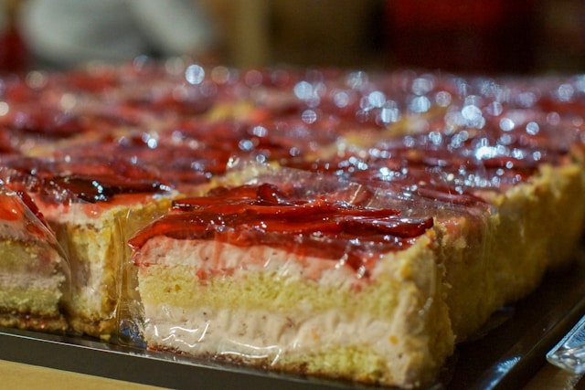

Strawberry Cheesecake Bars

Ingredients
- Cheesecake filling ingredients
- 2 packs of cream cheese
- 1/4 cup of sour cream
- 1/2 cup of granulated sugar
- 1 egg
- 1 tsp of vanilla extract
- Crust & topping ingredients
- 2 cans crescent roll dough
- 1 cup strawberry jam or preserves
- 2 tablespoons granulated sugar
Directions
- Preheat oven to 350°F.
- Spray non stick cooking spray on a 9x13 inch baking dish.
- Prepare the cheesecake filling:
- Mix cream cheese, sugar, sour cream, egg, and vanilla extract until smooth.
- Assemble:
- Press one can of crescent dough into the pan.
- Spread cheesecake filling evenly.
- Add a layer of strawberry jam and spread gently.
- Add second layer of dough on top.
- Sprinkle sugar on top.
- Bake, cool and serve:
- Bake for 25–30 minutes.
- Cool, then refrigerate for 2–3 hours.
- Cut into bars and serve.
Tips
- Use softened cream cheese
- Creates a smooth filling.
- Don’t overfill with jam
- Prevents soggy bars.
- Chill before cutting
- Helps bars hold shape.
- Add fresh strawberries
- Enhances flavor and presentation.